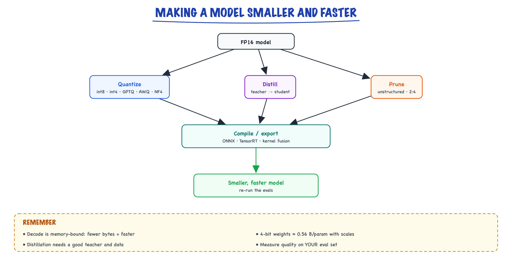

Quantization & compression // Inference & serving
Quantization methods, distillation, pruning, ONNX/TensorRT and kernel fusion.
01 — At a glance

Four independent levers: quantize the weights, distill into a smaller student, prune, and compile. Check quality after each one.
02 — New words
| Word | Meaning |
|---|---|
| Quantization | Storing numbers with fewer bits (for example 4 instead of 16), accepting a small rounding error. |
| Scale \(s\) | The step size between representable values: a quantized integer \(q\) means the real number \(s \cdot q\). |
| Zero-point \(z\) | An integer offset so an asymmetric range (say −0.2 to 1.3) can use every integer level. |
| Per-tensor / per-channel / per-group | How many weights share one scale: a whole matrix, one row, or a block of (typically) 128 weights. |
| Outlier | A value far larger than its neighbours. One outlier forces a big scale and wastes resolution on everything else. |
| PTQ / QAT | Post-training quantization (quantize a finished model) versus quantization-aware training (train with rounding simulated). |
| Weight-only vs W8A8 | Quantize only the weights (activations stay 16-bit), or quantize weights and activations to 8 bits. |
| Calibration set | A few hundred representative inputs used to measure activation ranges while quantizing. |
| GPTQ / AWQ | Two widely used 4-bit weight methods: error-compensating rounding, and protecting important channels. |
| FP8 (E4M3, E5M2) | 8-bit floating-point formats: 4 exponent and 3 mantissa bits, or 5 and 2. More range than INT8, less precision. |
| NF4 | "NormalFloat 4": 16 levels placed at the quantiles of a normal distribution, matching how weights are distributed. Used by QLoRA. |
| Distillation | Training a small student model to imitate a large teacher's outputs. |
| Pruning / 2:4 sparsity | Removing weights. 2:4 means exactly two of every four consecutive weights are zero, a pattern GPUs can accelerate. |
The lesson
03 — The question
A 70-billion-parameter model stored in 16-bit floats is 140 GB of weights. That does not fit on one 80 GB GPU, and even where it fits, it is slow: generating each token means reading every weight from GPU memory once. Compression attacks both problems with four independent levers:
- Quantization: fewer bits per weight (and sometimes per activation and per cache entry).
- Distillation: a smaller model trained to behave like the big one.
- Pruning: fewer weights.
- Compilation: the same maths with fewer trips to memory.
Quantization does most of the work in practice and gets most of this lesson. The question to keep asking is: what did we save, and what did it cost in quality?
04 — Step 1: why fewer bytes means faster
During decoding, each new token requires a matrix-vector product with every weight matrix in the model. At small batch sizes the GPU spends almost all its time reading weights from memory, not multiplying. So a hard upper bound on single-stream speed is:
\[ \text{tokens per second} \;\lesssim\; \frac{\text{memory bandwidth}}{\text{bytes of weights}} \]An H100 reads its memory at about 3.35 TB/s. For a 7B model:
| Format | Weight bytes | Upper bound, batch of 1 |
|---|---|---|
| FP16 / BF16 | 14 GB | ≈ 240 tokens/s |
| INT8 | 7 GB | ≈ 480 tokens/s |
| INT4 with group scales | ≈ 3.6 GB | ≈ 930 tokens/s |
Real numbers are lower (kernels are not perfect, and the KV cache must be read too), but the ratio holds: halving the bytes roughly doubles single-stream decode speed. And the 70B model that needed two GPUs in FP16 fits on one 80 GB GPU at 4 bits (about 36 GB), with room left for the KV cache.
Prefill is different. Processing the prompt multiplies many tokens at once, so it is limited by compute, not memory. Weight-only quantization speeds up decoding much more than prefill; to speed up prefill you need lower-precision arithmetic (FP8 or INT8 activations), not just smaller weights.
05 — Step 2: the mapping from real numbers to integers
Quantization maps each real value \(x\) to an integer \(q\) on a grid, and back:
\[ q = \mathrm{clamp}\Big(\mathrm{round}\big(\tfrac{x}{s}\big) + z,\ q_{\min},\ q_{\max}\Big), \qquad \hat x = s\,(q - z) \]The symmetric version sets \(z = 0\) and picks the scale so the largest magnitude lands on the last level: for signed 8-bit integers (−127 to 127), \(s = \max|x| / 127\); for 4-bit (−7 to 7), \(s = \max|x| / 7\). The error \(\hat x - x\) is at most \(s/2\) per value.
Worked: five weights to INT8, then to INT4
Take \(x = [0.12,\ -0.50,\ 0.33,\ 1.27,\ -0.04]\). The largest magnitude is 1.27.
- INT8: \(s = 1.27/127 = 0.01\), so \(q = [12, -50, 33, 127, -4]\). Dequantizing gives back exactly \([0.12, -0.50, 0.33, 1.27, -0.04]\): 256 levels are plenty.
- INT4: \(s = 1.27/7 \approx 0.181\). Then \(x/s = [0.66, -2.76, 1.82, 7.0, -0.22]\), which rounds to \(q = [1, -3, 2, 7, 0]\). Dequantized: \([0.181, -0.544, 0.363, 1.27, 0]\). The mean absolute error is 0.036, and the small weight −0.04 has become exactly 0.
With only 15 levels, the grid is coarse, and its spacing is set entirely by the biggest value.
07 — Step 4: activations are the hard part
Weights are fixed, so they can be quantized carefully once, offline. Activations change with every input, and LLM activations have a specific problem: in models beyond a few billion parameters, a handful of hidden dimensions carry values tens to hundreds of times larger than the rest, consistently across tokens. Quantize those activations to INT8 with one scale and everything else collapses to a few levels.
That is why two families exist:
- Weight-only (W4A16, W8A16): weights stored in 4 or 8 bits, converted back to 16-bit just before the multiply. Easy, robust, and the right choice for memory-bound decoding.
- Weights and activations (W8A8, FP8): the multiply itself runs in 8 bits on tensor cores, roughly doubling arithmetic throughput. Needs a fix for activation outliers. SmoothQuant moves the difficulty from activations into weights with an exactly equivalent rescaling: \(XW = (X\,\mathrm{diag}(s)^{-1})(\mathrm{diag}(s)\,W)\). Dividing the outlier channels of \(X\) by \(s\) tames them; multiplying the matching rows of \(W\) by \(s\) keeps the product unchanged. FP8 sidesteps much of the problem because a floating-point format has far more dynamic range than an integer one.
08 — Step 5: smarter rounding with GPTQ and AWQ
Rounding each weight to its nearest level independently ("round to nearest") is a reasonable baseline but leaves accuracy on the table at 4 bits. Two methods dominate:
GPTQ: compensate each error
GPTQ quantizes a weight matrix one column at a time. After rounding a column, it adjusts the not-yet-quantized columns to cancel the error that rounding introduced, as measured on calibration inputs. The adjustment uses second-order information (an approximation of how sensitive the layer's output is to each weight), so errors in sensitive directions get compensated most. The result is much better 4-bit (and usable 3-bit) quality than plain rounding, computed in minutes to hours on one GPU.
AWQ: protect the weights that matter
AWQ starts from an observation: a small fraction of weight channels (around 1%) matter far more than the rest, and you can tell which ones from the activation magnitudes on calibration data. Instead of keeping those channels in high precision (awkward for kernels), AWQ scales them up before quantization and scales the matching activations down, the same equivalence trick as SmoothQuant, so their relative rounding error shrinks. No retraining, and it generalises well across tasks.
In practice both produce 4-bit models that lose little quality at 7B parameters and above. Which one to use is often decided by what your serving engine supports.
09 — Step 6: the formats you will meet
| Format | Bits | What it is good for |
|---|---|---|
| FP32 | 32 | Master weights and optimizer state during training |
| BF16 / FP16 | 16 | The default for inference; BF16 has FP32's range, FP16 has more precision |
| FP8 E4M3 | 8 | Inference and training matmuls on Hopper-class GPUs and newer; range about ±448 |
| FP8 E5M2 | 8 | Gradients in FP8 training, where range matters more than precision; about ±57,344 |
| INT8 | 8 | W8A8 with SmoothQuant, or near-lossless weight-only |
| INT4 (GPTQ, AWQ) | 4 + scales | Weight-only serving on GPUs; the common "4-bit" checkpoint |
| NF4 | 4 + scales | Frozen base weights in QLoRA fine-tuning |
| GGUF k-quants (Q4_K_M, Q5_K_M, …) | 2 to 8 | llama.cpp and Ollama on CPUs and laptops; mixed precision per tensor |
10 — Step 7: quantizing the KV cache
At high concurrency the KV cache, not the weights, fills GPU memory (see the inference-internals topic for its size formula). Storing keys and values in FP8 instead of FP16 halves the cache, which roughly doubles how many sequences or how much context fits at once. Serving engines expose this as a single flag (for example --kv-cache-dtype fp8 in vLLM). Quality impact is usually small; check long-context tasks, where errors can accumulate.
11 — Step 8: distillation, a smaller model trained to imitate
Quantization keeps the model and shrinks its numbers. Distillation trains a different, smaller model. The student learns from the teacher's full output distribution, not just the right answer, because the distribution carries information: a teacher that gives "cat" 0.7 and "kitten" 0.2 and "car" 0.001 is teaching which mistakes are reasonable.
The classic loss mixes imitation and ordinary training, with both distributions softened by a temperature \(T\):
\[ \mathcal{L} = \alpha\, T^2\, \mathrm{KL}\big(p^{\text{teacher}}_T \,\|\, p^{\text{student}}_T\big) + (1 - \alpha)\, \mathrm{CE}\big(y, p^{\text{student}}\big) \]Softening (\(T > 1\)) exposes the small probabilities that carry the teacher's knowledge; the \(T^2\) factor keeps the gradient size comparable as \(T\) changes. For LLMs, the common practical form is sequence-level distillation: generate a large set of answers with the teacher and fine-tune the student on them. Much of the instruction data behind today's small open models was produced this way.
Distillation is expensive (it is training) but can buy a large cut: DistilBERT kept about 97% of BERT's language-understanding score with 40% fewer parameters and 60% faster inference. Use it when the same narrow task runs at very high volume.
12 — Step 9: pruning and structured sparsity
Pruning sets weights to zero. Two kinds behave very differently:
- Unstructured: remove any individual weights (for example, the smallest by magnitude). One-shot methods such as SparseGPT and Wanda can zero 50% of an LLM's weights with modest quality loss. But scattered zeros do not make a dense GPU kernel faster; you only save if you store and compute in a sparse format, which rarely pays off at 50%.
- Structured: remove whole units (heads, channels, layers), or impose the 2:4 pattern (two zeros in every four weights), which NVIDIA tensor cores since Ampere can execute at up to twice the matmul throughput. Speedups are real; quality loss is larger, and usually needs some retraining to recover.
In LLM serving today, pruning is used far less than quantization. Know it exists and why unstructured sparsity rarely gives speed.
13 — Step 10: compilation and kernel fusion
A transformer layer is dozens of small operations: a matmul, add bias, apply activation, normalise. Run separately, each reads its input from GPU memory and writes its output back. Kernel fusion combines them into one kernel that keeps intermediates in fast on-chip memory, removing those round trips. FlashAttention is the famous example: it fuses the whole attention computation so the full attention matrix is never written to memory.
Tools: torch.compile generates fused kernels from PyTorch code; ONNX Runtime and TensorRT / TensorRT-LLM optimise an exported graph for specific hardware; serving engines such as vLLM ship hand-tuned fused kernels. Compilation changes no weights and no outputs (beyond floating-point noise), so it is the one lever with no quality cost.
14 — Measuring the quality cost
Never trust a compression method's headline; measure on your own task:
- Perplexity on held-out text: a quick, sensitive check. A rise of a few percent at 4 bits is typical; a large jump means something went wrong.
- Your task evaluation (accuracy, faithfulness, pass rate) compared side by side with the 16-bit model on the same set.
- Edge cases: long contexts, other languages, maths and code, which degrade first.
Rules of thumb, not guarantees: 8-bit weights are close to lossless; good 4-bit methods cost a little at 7B and above; small models (under about 3B) and 3-bit or lower suffer noticeably. A larger model at 4 bits usually beats a smaller model at 16 bits that uses the same memory.
15 — Choosing a lever
| Situation | First choice |
|---|---|
| Model does not fit on the GPU | INT4 weight-only (AWQ or GPTQ) |
| Single-user latency too high | Weight-only quantization, then speculative decoding |
| Throughput too low at high concurrency | FP8 weights and activations, FP8 KV cache, continuous batching |
| Running on a laptop or CPU | GGUF Q4_K_M or Q5_K_M with llama.cpp or Ollama |
| Fine-tuning a big model on one GPU | QLoRA: NF4 frozen base plus 16-bit LoRA adapters |
| One narrow task at enormous volume | Distil into a smaller model, then quantize it |
16 — In code: group-wise INT4 by hand, then the real thing
import numpy as np def quantize_groupwise(w, bits=4, group=128): """Symmetric per-group quantization. Returns integers, scales, and the reconstruction.""" qmax = 2 ** (bits - 1) - 1 # 7 for 4-bit, 127 for 8-bit w = w.reshape(-1, group) scale = np.abs(w).max(axis=1, keepdims=True) / qmax scale[scale == 0] = 1.0 q = np.clip(np.round(w / scale), -qmax, qmax).astype(np.int8) return q, scale.astype(np.float16), (q * scale).reshape(-1) rng = np.random.default_rng(0) w = rng.normal(0, 0.02, 4096 * 128) w[::997] *= 40 # sprinkle outliers, like real weights for g in (4096 * 128, 128): # one scale for everything, vs per-128 _, _, w_hat = quantize_groupwise(w, bits=4, group=g) print(f"group={g:>7}: mean abs error {np.abs(w_hat - w).mean():.5f}")
The per-128 error comes out several times smaller than the single-scale error: Step 3 in numbers. Loading a ready-made 4-bit model in practice is a single argument:
# vLLM: serve an AWQ checkpoint, with an FP8 KV cache # vllm serve TheBloke/Mistral-7B-Instruct-v0.2-AWQ --quantization awq --kv-cache-dtype fp8 # Transformers + bitsandbytes: load any model in 4-bit NF4 (the QLoRA setup) from transformers import AutoModelForCausalLM, BitsAndBytesConfig import torch cfg = BitsAndBytesConfig(load_in_4bit=True, bnb_4bit_quant_type="nf4", bnb_4bit_compute_dtype=torch.bfloat16, bnb_4bit_use_double_quant=True) model = AutoModelForCausalLM.from_pretrained("meta-llama/Llama-3.1-8B-Instruct", quantization_config=cfg, device_map="auto")
More detail
17 — Quantization basics
symmetric: s = max|x| / (2^{b−1} − 1), q = round(x / s), x̂ = s·q
asymmetric: s = (max − min)/(2^b − 1), z = round(−min/s), q = round(x/s) + z
int8 example: weights in [−0.5, 0.5] → s = 0.5/127 ≈ 0.0039; 0.123 → q = 31 → x̂ = 0.122
- Granularity: per-tensor (one scale), per-channel (one per output row), per-group (e.g. 128 weights). Finer → less error, slightly more storage.
- What gets quantized: weights only (W8A16, W4A16) helps memory-bound decode; weights + activations (W8A8, FP8) uses low-precision tensor cores and helps compute-bound prefill and large batches; KV cache (FP8/INT8) for long context.
- PTQ vs QAT: post-training quantization needs only a small calibration set; quantization-aware training simulates rounding during training (straight-through estimator) for better low-bit accuracy.
18 — LLM quantization methods
The core difficulty: LLM activations contain a few channels with values 100× larger than the rest. One shared scale then crushes everything else to zero.
- LLM.int8(): detect outlier channels, run them in fp16, the rest in int8.
- SmoothQuant: divide activations by a per-channel factor and multiply the weights by it (math unchanged), moving the difficulty into weights, which tolerate it. Enables W8A8.
- GPTQ: quantize weights column by column; after rounding each, adjust the remaining columns using second-order (Hessian) information from calibration data to cancel the error. Good 4-bit.
- AWQ: about 1% of weight channels matter most, identified by activation magnitude; scale them up before quantizing so they keep precision. Fast, robust 4-bit, well supported in vLLM.
- GGUF (llama.cpp): block-wise k-quants (Q4_K_M etc.) for CPU, Apple Silicon and local inference.
- FP8 on H100/L40S/Ada: near-lossless W8A8 with simple per-tensor scaling; often the first thing to try on modern GPUs.
Rule of thumb: 8-bit is nearly free; 4-bit weight-only usually costs ~1–2 points on benchmarks, more on math/code; below 4 bits degrades fast. Always measure on your own eval.
19 — Knowledge distillation
A large teacher's output distribution says not just "the answer is cat" but "dog is somewhat plausible, car is not". That "dark knowledge" gives a student far more signal per example than one-hot labels.
L = α · CE(y, s) + (1 − α) · T² · KL( softmax(t/T) ‖ softmax(s/T) ) T: temperature (2–5 typical) softens both distributions T²: restores gradient scale, which softening shrinks by 1/T²
- Logit (white-box) distillation: needs teacher logits and a shared tokenizer.
- Sequence-level (black-box) distillation: the teacher generates responses; SFT the student on them. Works through any API; how most small "distilled" LLMs are made.
- On-policy distillation: the student generates, the teacher scores or corrects; avoids train/test mismatch.
Startup pattern: prototype with a frontier API model, log inputs/outputs, distill into a fine-tuned 1–8B open model that's 10–50× cheaper to serve.
20 — Pruning and sparsity
Remove weights or whole structures. Unstructured pruning (zero individual weights, e.g. SparseGPT, Wanda) keeps accuracy at 50% sparsity but needs sparse kernels to be faster. 2:4 structured sparsity (2 zeros in every 4) is accelerated by Ampere+ tensor cores. Structured pruning removes heads, channels or layers, then distills to recover (e.g. Minitron).
21 — ONNX, ONNX Runtime, TensorRT
- ONNX: an open, framework-neutral format for a model's computation graph and weights.
torch.onnx.export(model, example_inputs, "m.onnx", dynamic_axes=…)(or the newer dynamo-based exporter). - ONNX Runtime: runs ONNX graphs with graph optimizations (constant folding, operator fusion) and pluggable execution providers: CPU, CUDA, TensorRT, CoreML, DirectML. Supports int8 quantization. Great for CPU or edge serving of encoders and classifiers.
- TensorRT: NVIDIA's inference compiler. Parses the graph, fuses layers, picks the fastest kernel for each op on the exact GPU (autotuning), runs FP16/INT8/FP8 with calibration. Output "engine" is specific to GPU model and TensorRT version.
- TensorRT-LLM: LLM-specific runtime (in-flight batching, paged KV, FP8, speculative decoding); often the throughput leader on NVIDIA at the cost of build complexity.
Rule of thumb: LLM generation → vLLM/SGLang/TensorRT-LLM. Embedding models, rerankers, classifiers, vision → ONNX Runtime or TensorRT (or Triton Inference Server hosting them).
22 — Kernel fusion and why compilers help
Every separate GPU op reads its input from HBM and writes its output back. A chain like matmul → add bias → GELU → dropout does four round-trips; a fused kernel does one. Fusion, FlashAttention, torch.compile, TensorRT and Triton custom kernels are all applications of one principle: minimize bytes moved between HBM and the compute units.
In production
23 — Where people get lost
- "4-bit means 4 bits per weight." Scales and zero-points add roughly 0.1 to 0.5 bits; budget 0.5 to 0.6 bytes per parameter.
- Expecting weight-only quantization to speed up prefill. Prefill is compute-bound; smaller weights mainly speed up decoding.
- Quantizing activations like weights. Activation outliers wreck naive INT8; use SmoothQuant-style rescaling or FP8.
- Judging by perplexity alone. Long-context, multilingual, maths and code tasks degrade first and can hide behind a small perplexity change.
- Calibrating on the wrong data. GPTQ and AWQ fit to their calibration set; calibrate on text like your production traffic.
- Expecting 50% unstructured sparsity to halve latency. Dense kernels do not skip scattered zeros.
- Forgetting the KV cache. At high concurrency it can outweigh the weights; quantizing it may matter more.
24 — How this connects
Where this shows up later
- Serving & scaling — vLLM and Ollama, benchmarking honestly, a production serving setup and scaling it.
- Portfolio projects — Five projects from micrograd to a shipped service, and a weekend build that makes interview answers real.